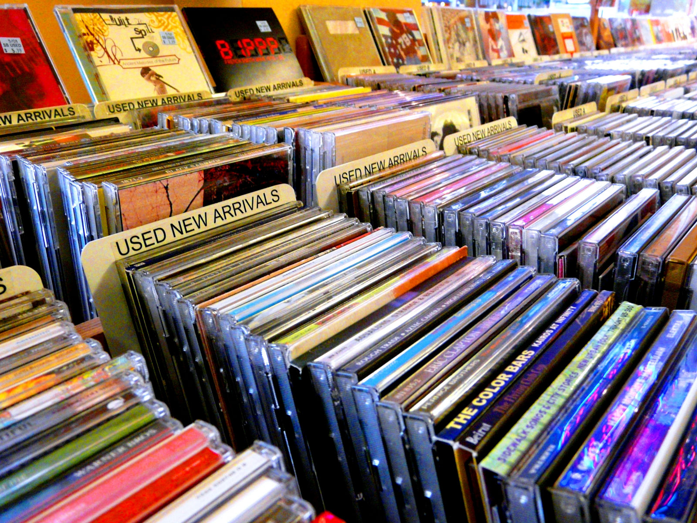

Runtergeladen
...und trotzdem bezahlt
Was darf ich, und was nicht?
Jura-Foo
§§ 106, 108 UrhG: Vervielfältigung (von Medien) strafbar
- Strafverfolgung: Üblicherweise nur in groben Fällen /Gewinnerzielung
- Zivilrecht (Abmahnung) vorherrschend
Privatkopie
- Nicht aus „offensichtlich nichtlegaler Quelle“
- Keine Überwindung „technisch wirksamer Sperren“
- Ca. 7 Kopien im (engeren) Bekanntenkreis
Musikmachen kostet Geld
Ausgaben - schon als Hobbyist
Instrument erlernen: Dauert Ewigkeiten...
Zeit für Proben, Schreiben von Stücken, etc.
Instrumente
Technik (Mikros, Verstärker, etc.)
Miete Band-Raum
Studiozeit (für professionelle Aufnahmen)
Vom Amateur zum Profi
Typischerweise „Freiberufler”
Weitere Kosten:
- Versicherungen (Krankenversicherung, etc.)
- Rücklagen, wenn das Geschäft nicht läuft
...es kostet erheblich Geld.
Der klassische Verkaufsweg
Vermarktung über Musik-Labels
Plattenvertrag
- Band-Übernahmevertrag: Vermarktung eines Werkes
- Künstlervertrag: Vertrag über eine gewisse Anzahl Alben / bestimmte Zeit
Typisch (je nach Vertragsinhalt): Künstler tritt Verwertungsrechte an Label ab. Label kümmert sich im Gegenzug um...
- Produktion des Albums (Studio, Fotograf, Cover, Herstellung)
- Vertrieb (Großhandel, Einzelhandel)
- Werbung (auch Platzierung im Radio, etc.)
- Vermittlung von Auftritten, Tour-Organisation
Wer bekommt wieviel
Daten aus c't 12/2004; vergleichbare Werte von 2009. Quellenlage dünn und widersprüchlich.
Äh... wie meinen!?
Strukturen stammen - wortwörtlich - aus dem letzten Jahrtausend
- Technik war sündhaft teuer
- Studiozeit (Technik plus Tontechniker) kostete tausende pro Tag
- Tonträgerproduktion mußte vorfinanziert werden (große Auflagen, um rentabel zu sein)
Aber: Voraussetzungen sind heute nicht mehr gegeben
Alternative Verdienstmöglichkeiten
„Next-Generation“-Labels
Junge Firmen, die einen Teil des Services übernehmen - am Beispiel von CD Baby.
- Verkauf und Logistik von CDs (eigene Seite, Amazon, ...)
- Verkauf von Downloads (eigene Seite, iTunes, Amazon, ...)
- Platzierung bei Spotify, ...
- Sync Licensing: Abhandeln von Lizenzen, wenn die Musik in Filmen, Werbespots, etc. verwendet werden soll
- Produktion von CDs (Brennen/Pressen)
Typisch: Fixe (oft einmalige) Verwaltungspauschale; beliebige Stückelung der Dienstleistung; hoher Anteil geht an Künstler
Selbstvermarktung
Bandcamp CD-BabeBildnachweise
- alternativen.jpg Christian Reed CC-Attribution
- derklassischeverkaufsweg.jpg sea turtle CC-Attribution-NonCommercial-NoDerivs
- musikmachenkostetgeld.jpg Manny Moss CC-Attribution-NoDerivs
- title.jpg 邪恶的正太 CC-Attribution-NonCommercial-ShareAlike
- wasdarfich.jpg Helga Weber CC-Attribution-NoDerivs
This work is licensed under a Creative Commons Attribution-NonCommercial-ShareAlike 3.0 Unported License.